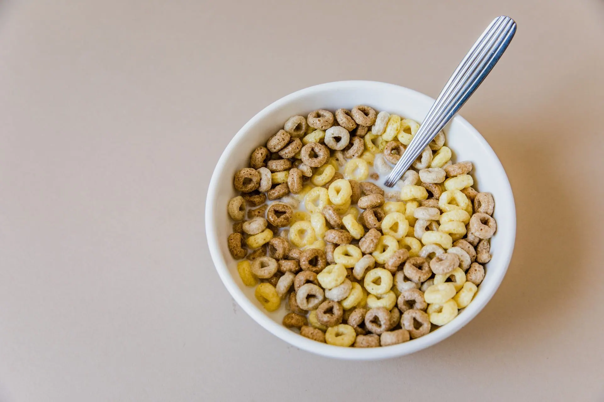

Grades 6 to 8
Health
Nutrition Facts label lesson: how to read a label, in 25 minutes, straight from this page
A free nutrition label lesson for grades 6 to 8: start with the serving size, find the four label parts, learn the 5% and 20% guide, and compare two labels.
What your class will see
Press Teach it now and the board plays these in order. Click any slide to start there.
What it is
The Nutrition Facts label shows what is in a packaged food. This lesson follows the order of FDA's guide to the label: serving information first, then calories, then the nutrients, then the Percent Daily Value (%DV).
FDA explains that all the nutrient amounts shown on the label, including the number of calories, refer to the size of the serving. The serving size reflects the amount that people typically eat or drink. It is not a recommendation of how much you should eat or drink.
FDA's general guide to %DV says 5% DV or less of a nutrient per serving is considered low and 20% DV or more is considered high. FDA also lists nutrients to get less of (Saturated Fat, Sodium, and Added Sugars) and nutrients to get more of (Dietary Fiber, Vitamin D, Calcium, Iron, and Potassium). The label's own footnote says 2,000 calories a day is used for general nutrition advice.
The two cereal labels in this lesson are made up and carry no brand. The lesson is about reading the numbers, not about judging foods or counting anything.
How to run it
25 minutes, 7 steps. The time on the left is when each step starts.
-
0:00
Warm-up: two sample labels
3 minOn the boardTwo SAMPLE cereal labels, made up for this lesson. Cereal A: serving size 1/2 cup, Total Sugars 6 g. Cereal B: serving size 1 cup, Total Sugars 10 g. Which cereal has more sugar?
You do- Read the board aloud. Say that both labels are made up and carry no brand.
- Students vote with a show of hands for A or B, then say why.
- Do not say which is right yet. Write the reasons on the board.
Say: Keep your answer. The serving sizes are different, and we will come back to that.
-
3:00
Serving size first
4 minOn the board- On a Nutrition Facts label, all the nutrient amounts shown, including the number of calories, refer to the size of the serving.
- The serving size reflects the amount that people typically eat or drink. It is not a recommendation of how much you should eat or drink.
- If you ate two servings, you would need to double the nutrient and calorie amounts, as well as the %DVs.
- FDA's guide: 5% DV or less of a nutrient per serving is considered low, and 20% DV or more is considered high.
- The label's footnote says 2,000 calories a day is used for general nutrition advice.
You do- Read the five facts aloud, one slide at a time.
- After the second fact, ask what the label is not telling you to do.
- Ask students to find the serving size and the servings per container on a food package at home tonight.
Say: Every amount on the label belongs to one serving, so the serving size comes first.
-
7:00
The parts of the label
4 minOn the boardFDA's four numbered parts: 1. Serving Information 2. Calories 3. Nutrients 4. The Percent Daily Value (%DV)
You do- Show the FDA sample label. Zoom to each of the four parts in order.
- At each part, have students name what they see: servings per container and serving size, the calorie number, the list of nutrients, the %DV column.
- Read the footnote at the bottom out loud.
Say: This is a sample label from FDA. We read it from the top down.
-
11:00
Percent Daily Value and a check
4 minOn the board5% DV or less of a nutrient per serving is considered low. 20% DV or more is considered high. If you eat two servings, what doubles?
You do- Show the 5% and 20% guide and read it aloud.
- On the FDA sample label, find one nutrient at or below 5% and one at or above 20%.
- Run the quick check. Take a show of hands for each choice, then reveal the answer.
Say: The guide tells you if a serving is low or high in a nutrient. It does not call a food good or bad.
-
15:00
FDA's two lists
3 minOn the boardSort the nutrients the way FDA lists them: Nutrients to get less of. Nutrients to get more of. Saturated Fat, Sodium, Added Sugars, Dietary Fiber, Vitamin D, Calcium, Iron, Potassium.
You do- Students sort the eight nutrients on the slide. They can drag them, or press Next and one nutrient sorts itself each time.
- Say that these are FDA's lists, and read each list aloud once the sort is done.
-
18:00
Your turn: compare the labels
4 minOn the boardCereal A: serving size 1/2 cup, Total Sugars 6 g. Cereal B: serving size 1 cup, Total Sugars 10 g. How much sugar is in 1 cup of each? How much is in 2 servings of each?
You do- Students work alone or in pairs for four minutes and write the four amounts.
- Take the answers: 1 cup of A has 12 g and 1 cup of B has 10 g. Two servings of A is 1 cup, so 12 g, and two servings of B is 2 cups, so 20 g.
- Ask which comparison is fair, and why the labels alone were not enough.
Say: To compare two labels, compare the same amount.
-
22:00
Discuss and exit ticket
3 minOn the boardWhich line do you read first, and why?
You do- Spin the wheel and give pairs a minute to talk about the question that comes up.
- Students answer the exit ticket on a scrap of paper and hand it to you at the door.
Discussion questions
Open an answer when you want it.
Why does a Nutrition Facts label start with the serving size?
All the nutrient amounts shown on the label, including the number of calories, refer to the size of the serving. Without the serving size, the other numbers cannot be read.
If you ate two servings, what would change on the label's numbers?
You would need to double the nutrient and calorie amounts, as well as the %DVs.
What does 5% DV or less mean? What does 20% DV or more mean?
FDA's guide says 5% DV or less of a nutrient per serving is considered low, and 20% DV or more is considered high.
Why compare two labels using the same amount, like 1 cup?
Serving sizes can differ, so the numbers on two labels can be for different amounts. In the made up example, Cereal A shows 6 g of Total Sugars for 1/2 cup and Cereal B shows 10 g for 1 cup, so 1 cup of A has 12 g and 1 cup of B has 10 g.
Exit ticket
Which line do you read first, and why?
The serving size, with the servings per container. All the nutrient amounts on the label, including the calories, refer to the size of the serving, so every other number depends on it.
Make it fit your class
Younger students
For grade 5, use only the serving size and the 5% and 20% guide. Skip the sort and compare the two sample labels for one amount, 1 cup.
Older students
For grades 9 to 12, have students bring a label from home with the brand covered, find the serving size, the servings per container and one nutrient at or below 5% DV, and write what they would compare it with.
Want it printed? These files from our TPT store go with this lesson: Middle School Health Curriculum Unit 2: Nutrition and Healthy Eating Lessons, Middle School Health Curriculum Growing Bundle.
Where the facts come from
- U.S. Food and Drug Administration, How to Understand and Use the Nutrition Facts Label. Used for the four numbered parts of the label, what the serving size means, the two servings example, the 5% and 20% DV guide, and FDA's lists of nutrients to get less of and to get more of (content current as of 03/05/2024).
- U.S. Food and Drug Administration, Daily Value on the Nutrition and Supplement Facts Labels. Used for using %DV to decide if a serving of a food is high or low in a nutrient, and the 5% and 20% guide.
- U.S. Food and Drug Administration, Website Policies: Linking to or Copying Information on the FDA Website. Used for FDA website text and graphics being in the public domain, so the sample label image can be shown with credit.
Image credits
- White Bowl with Round Cereals by RDNE Stock project, Pexels License. Source.
- Oatmeal (1) by Renee Comet (Photographer), Public Domain. Source.
- White Bowl With Cereal and Milk by RDNE Stock project, Pexels License. Source.
- FDA Nutrition Facts Label 2016 (sample label) by U.S. Food and Drug Administration, Public Domain. Source.
- Grains and Beans on Bowls by MART PRODUCTION, Pexels License. Source.
.jpg#Licensing){kind=link}
.jpg){kind=link}


Updated November 6, 2026